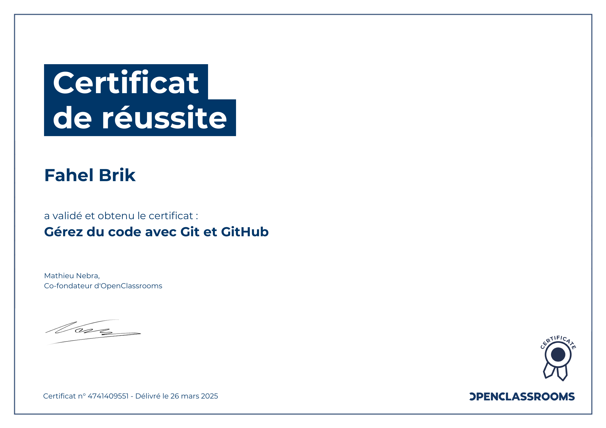
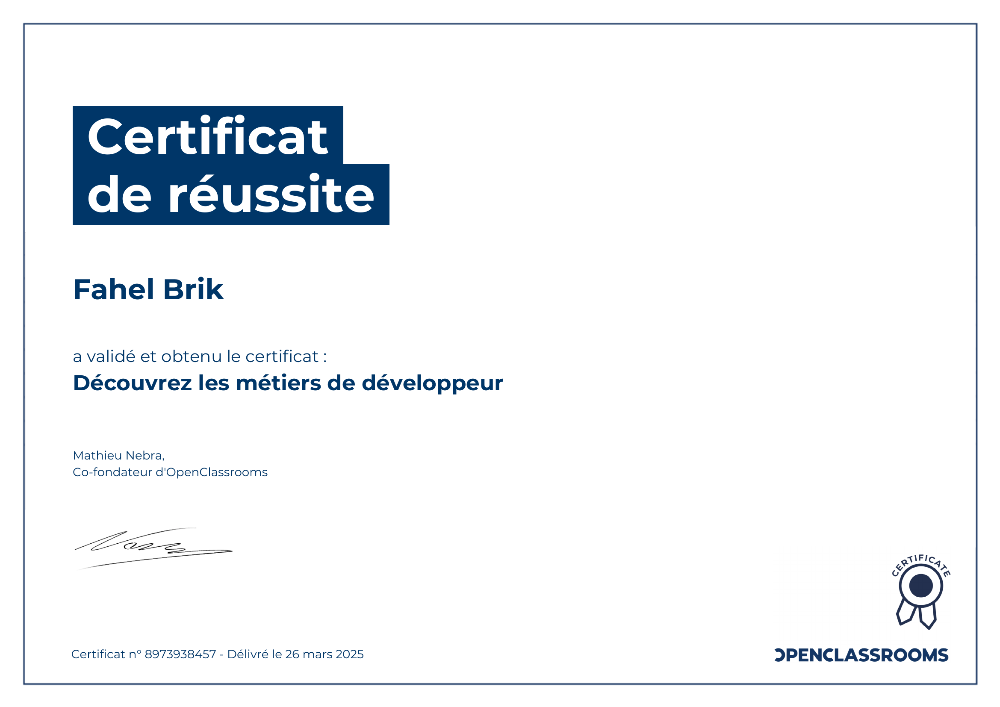
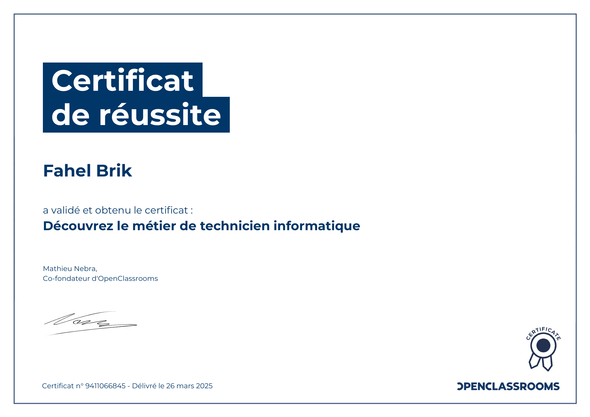

Certifications obtenues sur OpenClassrooms pour compléter ma formation BTS SIO
En parallèle de mon BTS SIO, j'ai suivi et validé plusieurs formations sur OpenClassrooms, la plateforme de formation en ligne de référence en France. Chaque certification est délivrée après validation d'un parcours complet avec des quiz et des exercices pratiques.
Formation aux fondamentaux de Python : variables, boucles, conditions, fonctions et programmation orientée objet. Python est un langage polyvalent très utilisé en data science, en automatisation et en développement web (Django, Flask).
9660516800
Maîtrise du système de versioning Git et de la plateforme GitHub : gestion de branches, commits, pull requests, merge et travail collaboratif. Compétence indispensable pour tout développeur travaillant en équipe.
4741409551
Panorama complet des métiers du développement informatique : développeur front-end, back-end, full-stack, mobile, DevOps. Compréhension des parcours professionnels, des technologies associées et des compétences requises pour chaque spécialisation.
8973938457
Introduction au métier de technicien informatique : maintenance matérielle et logicielle, support utilisateur, gestion de parc informatique et dépannage. Compétences complémentaires à mon profil de développeur pour comprendre l'infrastructure.
9411066845